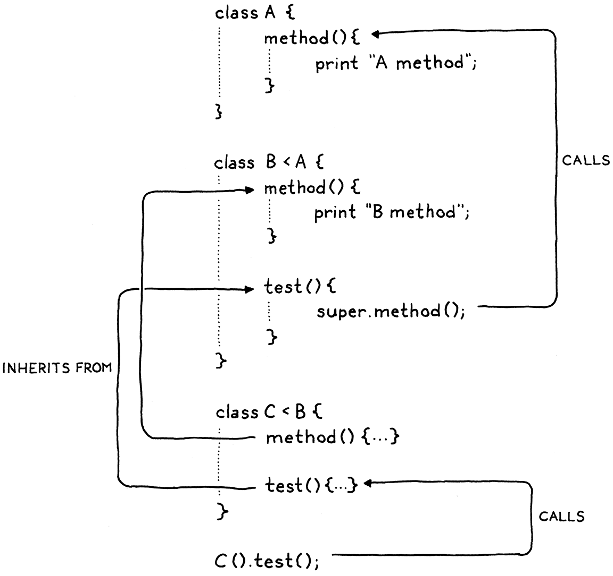

Inheritance
This book is a work in progress!
×If you see a mistake, find something unclear, or have a suggestion, please let me know. To follow its progress, please join the mailing list:
(I post about once a month. Don’t worry, I won’t spam you.)
Once we were blobs in the sea, and then fishes, and then lizards and rats and then monkeys, and hundreds of things in between. This hand was once a fin, this hand once had claws! In my human mouth I have the pointy teeth of a wolf and the chisel teeth of a rabbit and the grinding teeth of a cow! Our blood is as salty as the sea we used to live in! When we’re frightened, the hair on our skin stands up, just like it did when we had fur. We are history! Everything we’ve ever been on the way to becoming us, we still are.
Terry Pratchett, A Hat Full of Sky
Can you believe it? We’ve reached the last chapter of Part II. We’re almost done with our first Lox interpreter. The previous chapter was a big ball of intertwined object-orientation features. I couldn’t separate those from each other, but I did manage to untangle one piece. In this chapter, we’ll finish off Lox’s class support by adding inheritance.
Inheritance appears in object-oriented languages all the way back to the first one, Simula. Early on, Kristen Nygaard and Ole-Johan Dahl noticed commonalities across classes in the simulation programs they wrote. Inheritance gave them a way to reuse the code for those similar parts.
13 . 1Superclasses and Subclasses
Given that the concept is “inheritance”, you would hope they would pick a consistent metaphor and call them “parent” and “child” classes, but that would be too easy. Way back when, C. A. R. Hoare coined the term “subclass” to refer to a record type that refines another type. Simula borrowed that term to refer to a class that inherits from another. I don’t think it was until Smalltalk came along that someone flipped the Latin prefix to get “superclass” to refer to the other side of the relationship. From C++, you also hear “base” and “derived” classes. I’ll mostly stick with “superclass” and “subclass”.
Our first step towards supporting inheritance in Lox is a way to specify a
superclass when declaring a class. There’s a lot of variety in syntax for this.
C++ and C# place a : after the subclass’s name, followed by the superclass
name. Java uses extends instead of the colon. Python puts the superclass(es)
in parentheses after the class name. Simula puts the superclass’s name before
the class keyword.
This late in the game, I’d rather not add a new reserved word or token to the
lexer. We don’t have extends or even :, so we’ll follow Ruby and use a
less-than sign (<).
class Doughnut { // General doughnut stuff... } class BostonCream < Doughnut { // Boston Cream-specific stuff... }
To work this into the grammar, we add a new optional clause in our existing
classDecl rule.
classDecl → "class" IDENTIFIER ( "<" IDENTIFIER )? "{" function* "}" ;
After the class name, you can have a < followed by the superclass’s name. The
superclass clause is optional because you don’t have to have a superclass.
Unlike some other object-oriented languages like Java, Lox has no root “Object”
class that everything inherits from, so when you omit the superclass clause, the
class has no superclass, not even an implicit one.
We want to capture this new syntax in the class declaration’s AST node.
"Block : List<Stmt> statements",
in main()
replace 1 line
"Class : Token name, Expr.Variable superclass," +
" List<Stmt.Function> methods",
"Expression : Expr expression",
You might be surprised that we store the superclass name as an Expr.Variable, not a Token. The grammar restricts the superclass clause to a single identifier, but at runtime, that identifier is evaluated as a variable access. Wrapping the name in an Expr.Variable early on in the parser gives us an object that the resolver can hang the resolution information off of.
The new parser code follows the grammar directly.
Token name = consume(IDENTIFIER, "Expect class name.");
in classDeclaration()
Expr.Variable superclass = null;
if (match(LESS)) {
consume(IDENTIFIER, "Expect superclass name.");
superclass = new Expr.Variable(previous());
}
consume(LEFT_BRACE, "Expect '{' before class body.");
Once we’ve (possibly) parsed a superclass declaration, we store it in the AST.
consume(RIGHT_BRACE, "Expect '}' after class body.");
in classDeclaration()
replace 1 line
return new Stmt.Class(name, superclass, methods);
}
If we didn’t parse a superclass clause, the superclass expression will be
null. We’ll have to make sure the later passes check for that. The first of
those is the resolver.
define(stmt.name);
in visitClassStmt()
if (stmt.superclass != null) {
resolve(stmt.superclass);
}
beginScope();
The class declaration AST node has a new subexpression, so we traverse into and resolve that. Since classes are usually declared at the top level, the superclass name will most likely be a global variable, so this doesn’t usually do anything useful. However, Lox allows class declarations even inside blocks, so it’s possible the superclass name refers to a local variable. In that case, we need to make sure it’s resolved.
Because even well-intentioned programmers sometimes write weird code, there’s a silly edge case we need to worry about while we’re in here. Take a look at this:
class Oops < Oops {}
There’s no way this will do anything useful, and if we let the runtime try to run this, it will break the expectation the interpreter has about there not being cycles in the inheritance chain. The safest thing is to detect this case statically and report it as an error.
define(stmt.name);
in visitClassStmt()
if (stmt.superclass != null &&
stmt.name.lexeme.equals(stmt.superclass.name.lexeme)) {
Lox.error(stmt.superclass.name,
"A class can't inherit from itself.");
}
if (stmt.superclass != null) {
Assuming the code resolves without error, the AST travels to the interpreter.
public Void visitClassStmt(Stmt.Class stmt) {
in visitClassStmt()
Object superclass = null;
if (stmt.superclass != null) {
superclass = evaluate(stmt.superclass);
if (!(superclass instanceof LoxClass)) {
throw new RuntimeError(stmt.superclass.name,
"Superclass must be a class.");
}
}
environment.define(stmt.name.lexeme, null);
If the class has a superclass expression, we evaluate it. Since that could potentially evaluate to some other kind of object, we have to check at runtime that the thing we want to be the superclass is actually a class. Bad things would happen if we allowed code like:
var NotAClass = "I am totally not a class"; class Subclass < NotAClass {} // ?!
Assuming that check passes, we continue on. Executing a class declaration turns the syntactic representation of a class—its AST node—into its runtime representation, a LoxClass object. We need to plumb the superclass through to that too. We pass the superclass to the constructor.
methods.put(method.name.lexeme, function);
}
in visitClassStmt()
replace 1 line
LoxClass klass = new LoxClass(stmt.name.lexeme,
(LoxClass)superclass, methods);
environment.assign(stmt.name, klass);
The constructor stores it in a field.
constructor LoxClass()
replace 1 line
LoxClass(String name, LoxClass superclass, Map<String, LoxFunction> methods) { this.superclass = superclass;
this.name = name;
Which we declare here:
final String name;
in class LoxClass
final LoxClass superclass;
private final Map<String, LoxFunction> methods;
With that, we can define classes that are subclasses of other classes. Now, what does having a superclass actually do?
13 . 2Inheriting Methods
Inheriting from another class means that everything that’s true of the superclass should be true, more or less, of the subclass. In statically typed languages, that carries a lot of implications. The subclass must also be a subtype, and the memory layout is controlled so that you can pass an instance of a subclass to a function expecting a superclass and it can still access the inherited fields correctly.
Lox is a dynamically typed language, so our requirements are much simpler. Basically, it means that if you can call some method on an instance of the superclass, you should be able to call that method when given an instance of the subclass. In other words, methods are inherited from the superclass.
This lines up with one of the goals of inheritance—to give users a way to reuse code across classes. Implementing this in our interpreter is astonishingly easy.
return methods.get(name);
}
in findMethod()
if (superclass != null) {
return superclass.findMethod(name);
}
return null;
That’s literally all there is to it. When we are looking up a method on an instance, if we don’t find it on the instance’s class, we recurse up through the superclass chain and look there. Give it a try:
class Doughnut { cook() { print "Fry until golden brown."; } } class BostonCream < Doughnut {} BostonCream().cook();
There we go, half of our inheritance features are complete with only three lines of Java code.
13 . 3Calling Superclass Methods
In findMethod() we look for a method on the current class before walking up
the superclass chain. If a method with the same name exists in both the subclass
and the superclass, the subclass one takes precedence or overrides the
superclass method. Sort of like how variables in inner scopes shadow outer ones.
That’s great if the subclass wants to replace some superclass behavior completely. But, in practice, subclasses often want to refine the superclass’s behavior. They want to do a little work specific to the subclass, but also execute the original superclass behavior too.
However, since the subclass has overridden the method, there’s no way to refer
to the original one. If the subclass method tries to call it by name, it will
just recursively hit its own override. We need a way to say “Call this method,
but look for it directly on my superclass and ignore my override”. Java uses
super for this, and we’ll use that same syntax in Lox. Here is an example:
class Doughnut { cook() { print "Fry until golden brown."; } } class BostonCream < Doughnut { cook() { super.cook(); print "Pipe full of custard and coat with chocolate."; } } BostonCream().cook();
If you run this, it should print:
Fry until golden brown. Pipe full of custard and coat with chocolate.
We have a new expression form. The super keyword, followed by a dot and an
identifier, looks for a method with that name. Unlike calls on this, the search
starts at the superclass.
13 . 3 . 1Syntax
With this, the keyword works sort of like a magic variable, and the expression
is that one lone token. But with super, the subsequent . and property name
are inseparable parts of the super expression. You can’t have a bare super
token all by itself.
print super; // Syntax error.
So the new clause we add to the primary rule in our grammar includes the
property access as well.
primary → "true" | "false" | "nil" | "this" | NUMBER | STRING | IDENTIFIER | "(" expression ")" | "super" "." IDENTIFIER ;
Typically, a super expression is used for a method call, but, as with regular
methods, the argument list is not part of the expression. Instead, a super
call is a super access followed by a function call. Like other method calls,
you can get a handle to a superclass method and invoke it separately.
var method = super.cook; method();
So the super expression itself contains only the token for the super keyword
and the name of the method being looked up. The corresponding syntax tree node is thus:
"Set : Expr object, Token name, Expr value",
in main()
"Super : Token keyword, Token method",
"This : Token keyword",
Following the grammar, the new parsing code goes inside our existing primary()
method.
return new Expr.Literal(previous().literal);
}
in primary()
if (match(SUPER)) {
Token keyword = previous();
consume(DOT, "Expect '.' after 'super'.");
Token method = consume(IDENTIFIER,
"Expect superclass method name.");
return new Expr.Super(keyword, method);
}
if (match(THIS)) return new Expr.This(previous());
A leading super keyword tells us we’ve hit a super expression. After that we
consume the expected . and method name.
13 . 3 . 2Semantics
Earlier, I said a super expression starts the method lookup from “the
superclass”, but which superclass? The naïve answer is the superclass of
this, the object the surrounding method was called on. That coincidentally
produces the right behavior in a lot of cases, but that’s not actually correct.
Gaze upon:
class A { method() { print "A method"; } } class B < A { method() { print "B method"; } test() { super.method(); } } class C < B {} C().test();
Translate this program to Java, C#, or C++ and it will print “A method”, which
is what we want Lox to do too. When this program runs, inside the body of
test(), this is an instance of C. The superclass of C is B, but that is
not where the lookup should start. If it did, we would hit B’s method().
Instead, lookup should start on the superclass of the class containing the
super expression. In this case, since test() is defined inside B, the
super expression inside it should start the lookup on B’s superclass—A.

Thus, in order to evaluate a super expression, we need access to the
superclass of the class definition surrounding the call. Alack and alas, at the
point in the interpreter where we are executing a super expression, we don’t
have that easily available.
We could add a field to LoxFunction to store a reference to the LoxClass that
owns that method. The interpreter would keep a reference to the
currently executing LoxFunction so that we could look it up later when we hit a
super expression. From there, we’d get the LoxClass of the method, then its
superclass.
That’s a lot of plumbing. In the last chapter, we had a similar problem when
we needed to add support for this. In that case, we used our existing
environment and closure mechanism to store a reference to the current object.
Could we do something similar for storing the superclass? Well, I probably wouldn’t be talking about it if the
answer was no, so . . . yes.
One important difference is that we bound this when the method was accessed.
The same method can be called on different instances and each needs its own
this. With super expressions, the superclass is a fixed property of the
class declaration itself. Every time you evaluate some super expression, the
superclass is always the same.
That means we can create the environment for the superclass once, when the class
definition is executed. Immediately before we define the methods, we make a new
environment to bind the class’s superclass to the name super.
When we create the LoxFunction runtime representation for each method, that is
the environment they will capture in their closure. Later, when a method is
invoked and this is bound, the superclass environment becomes the parent for
the method’s environment, like so:
That’s a lot of machinery, but we’ll get through it a step at a time. Before we can get to creating the environment at runtime, we need to handle the corresponding scope chain in the resolver.
resolve(stmt.superclass);
}
in visitClassStmt()
if (stmt.superclass != null) {
beginScope();
scopes.peek().put("super", true);
}
beginScope();
If the class declaration has a superclass, then we create a new scope surrounding all of its methods. In that scope, we define the name “super”. Once we’re done resolving the class’s methods, we discard that scope.
endScope();
in visitClassStmt()
if (stmt.superclass != null) endScope();
currentClass = enclosingClass;
It’s a minor optimization, but we only create the superclass environment if the class actually has a superclass. There’s no point creating it when there isn’t a superclass since there’d be no superclass to store in it anyway.
With “super” defined in a scope chain, we are able to resolve the super
expression itself.
add after visitSetExpr()
@Override public Void visitSuperExpr(Expr.Super expr) { resolveLocal(expr, expr.keyword); return null; }
We resolve the super token exactly as if it were a variable. The resolution
stores the number of hops along the environment chain that the interpreter needs
to walk to find the environment where the superclass is stored.
This code is mirrored in the interpreter. When we evaluate a subclass definition, we create a new environment.
throw new RuntimeError(stmt.superclass.name,
"Superclass must be a class.");
}
}
environment.define(stmt.name.lexeme, null);
in visitClassStmt()
if (stmt.superclass != null) {
environment = new Environment(environment);
environment.define("super", superclass);
}
Map<String, LoxFunction> methods = new HashMap<>();
Inside that environment, we store a reference to the superclass—the actual LoxClass object for the superclass which we have now that we are in the runtime. Then we create the LoxFunctions for each method. Those will capture the current environment—the one where we just bound “super”—as their closure, holding on to the superclass like we need. Once that’s done, we pop the environment.
LoxClass klass = new LoxClass(stmt.name.lexeme,
(LoxClass)superclass, methods);
in visitClassStmt()
if (superclass != null) {
environment = environment.enclosing;
}
environment.assign(stmt.name, klass);
We’re ready to interpret super expressions themselves. There are a few moving
parts, so we’ll build this method up in pieces.
add after visitSetExpr()
@Override public Object visitSuperExpr(Expr.Super expr) { int distance = locals.get(expr); LoxClass superclass = (LoxClass)environment.getAt( distance, "super"); }
First, the work we’ve been leading up to. We look up the surrounding class’s superclass by looking up “super” in the proper environment.
When we access a method, we also need to bind this to the object the method is
accessed from. In an expression like doughnut.cook, the object is whatever we
get from evaluating doughnut. In a super expression like super.cook, the
current object is implicitly the same current object that we’re using. In
other words, this. Even though we are looking up the method on the
superclass, the instance is still this.
Unfortunately, inside the super expression, we don’t have a convenient node
for the resolver to hang the number of hops to this on. Fortunately, we do
control the layout of the environment chains. The environment where “this” is
bound is always right inside the environment where we store “super”.
LoxClass superclass = (LoxClass)environment.getAt(
distance, "super");
in visitSuperExpr()
LoxInstance object = (LoxInstance)environment.getAt(
distance - 1, "this");
}
Offsetting the distance by one looks up “this” in that inner environment. I admit this isn’t the most elegant code, but it works.
Now we’re ready to look up and bind the method, starting at the superclass.
LoxInstance object = (LoxInstance)environment.getAt(
distance - 1, "this");
in visitSuperExpr()
LoxFunction method = superclass.findMethod(expr.method.lexeme);
return method.bind(object);
}
This is almost exactly like the code for looking up a method of a get
expression, except that we call findMethod() on the superclass instead of on
the class of the current object.
That’s basically it. Except, of course, that we might fail to find the method. So we check for that too.
LoxFunction method = superclass.findMethod(expr.method.lexeme);
in visitSuperExpr()
if (method == null) {
throw new RuntimeError(expr.method,
"Undefined property '" + expr.method.lexeme + "'.");
}
return method.bind(object);
}
There you have it! Take that BostonCream example earlier and give it a try. Assuming you and I did everything right, it should fry it first, then stuff it with cream.
13 . 3 . 3Invalid uses of super
As with previous language features, our implementation does the right thing when the user writes correct code, but we haven’t bulletproofed the intepreter against bad code. In particular, consider:
class Eclair { cook() { super.cook(); print "Pipe full of crème pâtissière."; } }
This class has a super expression, but no superclass. At runtime, the code for
evaluating super expressions assumes that “super” was successfully resolved
and will be found in the environment. That’s going to fail here because there is
no surrounding environment for the superclass since there is no superclass. The
JVM will throw an exception and bring our interpreter to its knees.
Heck, there are even simpler broken uses of super:
super.notEvenInAClass();
We could handle errors like these at runtime by checking to see if the lookup
of “super” succeeded. But we can tell statically—just by looking at the
source code—that Eclair has no superclass and thus no super expression will
work inside it. Likewise, in the second example, we know that the super
expression is not even inside a method body.
Even though Lox is dynamically typed, that doesn’t mean we want to defer everything to runtime. If the user made a mistake, we’d like to help them find it sooner rather than later. So we’ll report these errors statically, in the resolver.
First, we add a new case to the enum we use to keep track of what kind of class is surrounding the current code being visited.
NONE,
CLASS,
in enum ClassType
add “,” to previous line
SUBCLASS
}
We’ll use that to distinguish when we’re inside a class that has a superclass versus one that doesn’t. When we resolve a class declaration, we set that if the class is a subclass.
if (stmt.superclass != null) {
in visitClassStmt()
currentClass = ClassType.SUBCLASS;
resolve(stmt.superclass);
Then, when we resolve a super expression, we check to see that we are
currently inside a scope where that’s allowed.
public Void visitSuperExpr(Expr.Super expr) {
in visitSuperExpr()
if (currentClass == ClassType.NONE) {
Lox.error(expr.keyword,
"Can't use 'super' outside of a class.");
} else if (currentClass != ClassType.SUBCLASS) {
Lox.error(expr.keyword,
"Can't use 'super' in a class with no superclass.");
}
resolveLocal(expr, expr.keyword);
If not—oopsie!—the user made a mistake.
13 . 4Conclusion
We made it! That final bit of error handling is the last chunk of code needed to complete our Java implementation of Lox. This is a real accomplishment and one you should be proud of. In the past dozen chapters and a thousand or so lines of code, we have learned and implemented . . .
- tokens and lexing,
- abstract syntax trees,
- recursive descent parsing,
- prefix and infix expressions,
- runtime representation of objects,
- interpreting code using the Visitor pattern,
- lexical scope,
- environment chains for storing variables,
- control flow,
- functions with parameters,
- closures,
- static variable resolution and error detection,
- classes,
- constructors,
- fields,
- methods, and finally,
- inheritance.
We did all of that from scratch, with no external dependencies or magic tools. Just you and I, our respective text editors, a couple of collection classes in the Java standard library, and the JVM runtime.
This marks the end of Part II, but not the end of the book. Take a break. Maybe write a few fun Lox programs and run them in your interpreter. (You may want to add a few more native methods for things like reading user input.) When you’re refreshed and ready, we’ll embark on our next adventure.
Challenges
-
Lox supports only single inheritance—a class may have a single superclass and that’s the only way to reuse methods across classes. Other languages have explored a variety of ways to more freely reuse and share capabilities across classes: mixins, traits, multiple inheritance, virtual inheritance, extension methods, etc.
If you were to add some feature along these lines to Lox, which would you pick and why? If you’re feeling courageous (and you should be at this point), go ahead and add it.
-
In Lox, as in most other object-oriented languages, when looking up a method, we start at the bottom of the class hierarchy and work our way up—a subclass’s method is preferred over a superclass’s. In order to get to the superclass method from within an overriding method, you use
super.The language BETA takes the opposite approach. When you call a method, it starts at the top of the class hierarchy and works down. A superclass method wins over a subclass method. In order to get to the subclass method, the superclass method can call
inner, which is sort of like the inverse ofsuper. It chains to the next method down the hierarchy.The superclass method controls when and where the subclass is allowed to refine its behavior. If the superclass method doesn’t call
innerat all, then the subclass has no way of overriding or modifying the superclass’s behavior.Take out Lox’s current overriding and
superbehavior and replace it with BETA’s semantics. In short:-
When calling a method on a class, prefer the method highest on the class’s inheritance chain.
-
Inside the body of a method, a call to
innerlooks for a method with the same name in the nearest subclass along the inheritance chain between the class containing theinnerand the class ofthis. If there is no matching method, theinnercall does nothing.
For example:
class Doughnut { cook() { print "Fry until golden brown."; inner(); print "Place in a nice box."; } } class BostonCream < Doughnut { cook() { print "Pipe full of custard and coat with chocolate."; } } BostonCream().cook();
This should print:
Fry until golden brown. Pipe full of custard and coat with chocolate. Place in a nice box.
-
-
In the chapter where I introduced Lox, I challenged you to come up with a couple of features you think the language is missing. Now that you know how to build an interpreter, implement one of those features.